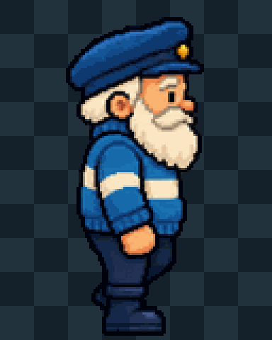
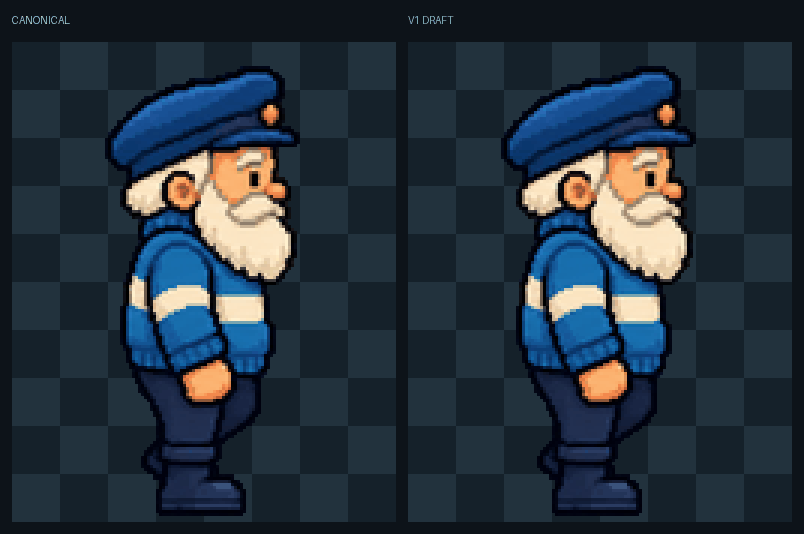
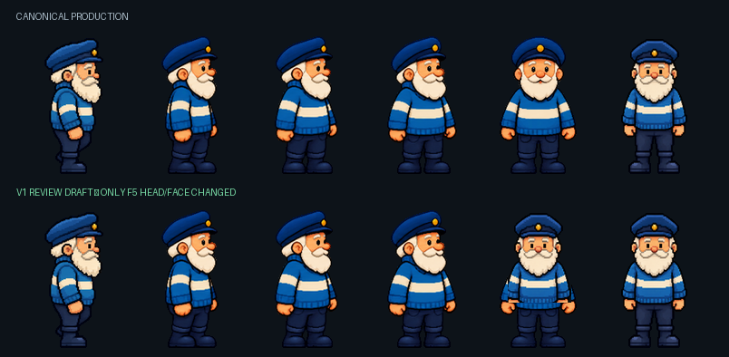
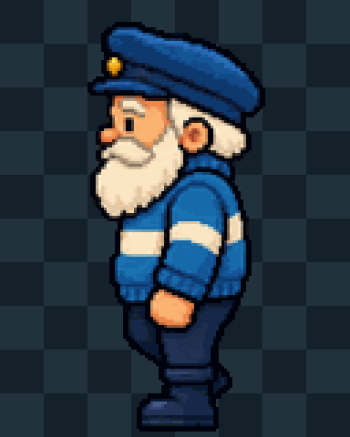
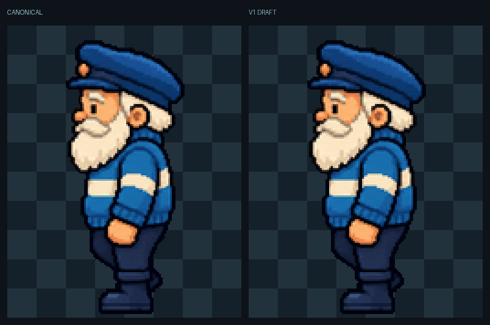
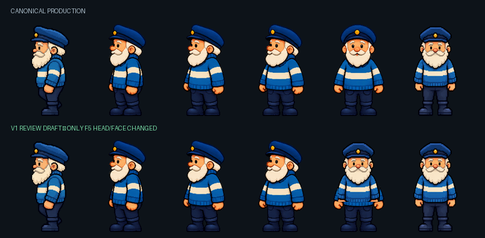

Canonical production

keeper_turn_front and keeper_turn_left_front only. The candidate F5 uses the approved adult neutral head and face; F6 was already an exact canon match.
Only F5 head/face pixels inside the declared mask change. F6 remains byte-identical to the approved neutral.



Canonical cab51cb946eb39e1a05e2665ccff7f0f3cb6523621d42a4766ccb8212d86b57b
Draft 1b9bdae2c3c47d576f6c2a64db5ba58c5c10d4de055df2901509601fb0fd47fe
Only F5 head/face pixels inside the declared mask change. F6 remains byte-identical to the approved neutral.




Canonical 7060620c5009a76e74dfa222c9f21bb6a33b6e49545b9a9c177539b2a6323599
Draft af5967d580b083f857772ed8b0b6033998fc6928cee2a4f4ad0fe5ffb44dc0e5
F1–F4 and F6 are byte-identical to production. Every F5 change is inside the published mask. Both strips have binary alpha, zero opaque cell-edge pixels, unchanged geometry/timing/anchors, and an exact neutral F6 endpoint. Nothing is promoted by this page.